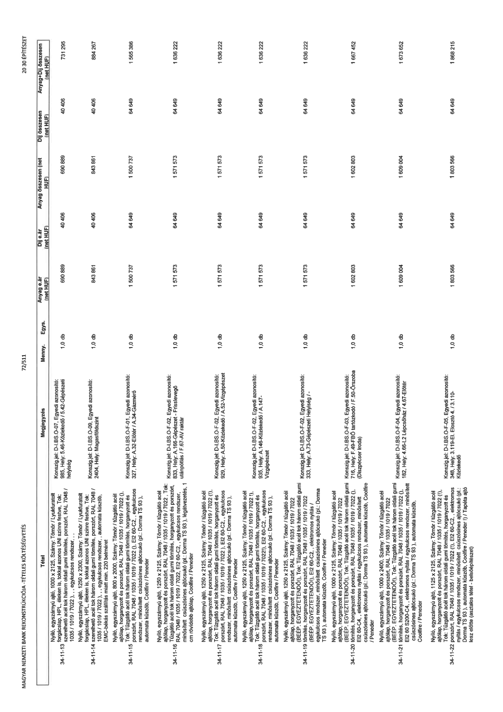

| Tétel | Megjegyzés | Menny. | Egys. | Anyag e.ár (net HUF) | Díj e.ár (net HUF) | Anyag összesen (net HUF) | Díj összesen (net HUF) | Anyag+Díj összesen (net HUF) |
|---|---|---|---|---|---|---|---|---|
| 34-11-13 Nyíló, egyszárnyú ajtó, 1000 x 2125, Szárny: Tömör / Lyukfuratolt forgácslap, HPL, éleken is, tokkal azonos UNI színre festve, Tok: szerelhető acél tok három oldali gumi tömítés, porszórt, RAL 7048 / 1035 / 1019 / 7022 (!), „ egykulcsos rendszer, | Konszig.jel: D-I.BS-O-07, Egyedi azonosító: 985, Hely: 5.46-Közlekedő / 5.42-Gépészeti helyiség | 1,0 | db | 690 889 | 40 406 | 690 889 | 40 406 | 731 295 |
| 34-11-14 Nyíló, egyszárnyú ajtó, 1250 x 2300, Szárny: Tömör / Lyukfuratolt forgácslap, HPL, éleken is, tokkal azonos UNI színre festve, Tok: szerelhető acél tok három oldali gumi tömítés, porszórt, RAL 7048 / 1035 / 1019 / 7022 (!), „ egykulcsos rendszer, „ automata küszöb, EMC-békás szállítás miatt min. 220 belméret | Konszig.jel: D-I.BS-O-09, Egyedi azonosító: 2404, Hely: Magasföldszint | 1,0 | db | 843 861 | 40 406 | 843 861 | 40 406 | 884 267 |
| 34-11-15 Nyíló, egyszárnyú ajtó, 800 x 2000, Szárny: Tömör / tűzgátló acél ajtólap, horganyzott és porszórt, RAL 7048 / 1035 / 1019 / 7022 (!), Tok: Tűzgátló acél tok három oldali gumi tömítés, horganyzott és porszórt, RAL 7048 / 1035 / 1019 / 7022 (!), EI2 60-C2, „ egykulcsos rendszer, minősített csúszósínes ajtócsukó (pl.: Dorma TS 93 ), automata küszöb, Coolfire / Peneder | Konszig.jel: D-I.BS-O-F-01, Egyedi azonosító: 327, Hely: A.32-Előtér / A.34-Gázmérő | 1,0 | db | 1 500 737 | 64 649 | 1 500 737 | 64 649 | 1 565 386 |
| 34-11-16 Nyíló, egyszárnyú ajtó, 1250 x 2125, Szárny: Tömör / tűzgátló acél ajtólap, horganyzott és porszórt, RAL 7048 / 1035 / 1019 / 7022 (!), Tok: Tűzgátló acél tok három oldali gumi tömítés, horganyzott és porszórt, RAL 7048 / 1035 / 1019 / 7022 (!), EI2 60-C2, „ egykulcsos rendszer, minősített csúszósínes ajtócsukó (pl.: Dorma TS 93 ), légátvezetés, 1 cm rövidebb ajtólap, Coolfire / Peneder | Konszig.jel: D-I.BS-O-F-02, Egyedi azonosító: 833, Hely: A.166-Gépészet - Frisslevegő utánpótlás / F.67-AV raktár | 1,0 | db | 1 571 573 | 64 649 | 1 571 573 | 64 649 | 1 636 222 |
| 34-11-17 Nyíló, egyszárnyú ajtó, 1250 x 2125, Szárny: Tömör / tűzgátló acél ajtólap, horganyzott és porszórt, RAL 7048 / 1035 / 1019 / 7022 (!), Tok: Tűzgátló acél tok három oldali gumi tömítés, horganyzott és porszórt, RAL 7048 / 1035 / 1019 / 7022 (!), EI2 60-C2, „ egykulcsos rendszer, minősített csúszósínes ajtócsukó (pl.: Dorma TS 93 ), automata küszöb, Coolfire / Peneder | Konszig.jel: D-I.BS-O-F-02, Egyedi azonosító: 929, Hely: A.50-Közlekedő / A.52-Vízgépészet | 1,0 | db | 1 571 573 | 64 649 | 1 571 573 | 64 649 | 1 636 222 |
| 34-11-18 Nyíló, egyszárnyú ajtó, 1250 x 2125, Szárny: Tömör / tűzgátló acél ajtólap, horganyzott és porszórt, RAL 7048 / 1035 / 1019 / 7022 (!), Tok: Tűzgátló acél tok három oldali gumi tömítés, horganyzott és porszórt, RAL 7048 / 1035 / 1019 / 7022 (!), EI2 60-C2, „ egykulcsos rendszer, minősített csúszósínes ajtócsukó (pl.: Dorma TS 93 ), automata küszöb, Coolfire / Peneder | Konszig.jel: D-I.BS-O-F-02, Egyedi azonosító: 935, Hely: A.146-Közlekedő / A.147-Vízgépészet | 1,0 | db | 1 571 573 | 64 649 | 1 571 573 | 64 649 | 1 636 222 |
| 34-11-19 Nyíló, egyszárnyú ajtó, 1250 x 2125, Szárny: Tömör / tűzgátló acél ajtólap, horganyzott és porszórt, RAL 7048 / 1035 / 1019 / 7022 (BEÉP. EGYEZTETENDŐ!), Tok: Tűzgátló acél tok három oldali gumi tömítés, horganyzott és porszórt, RAL 7048 / 1035 / 1019 / 7022 (BEÉP. EGYEZTETENDŐ!), EI2 60-C2, „ elektromos nyitás / egykulcsos rendszer, minősített csúszósínes ajtócsukó (pl.: Dorma TS 93 ), automata küszöb, Coolfire / Peneder | Konszig.jel: D-I.BS-O-F-02, Egyedi azonosító: 333, Hely: A.73-Gépészeti Helyiség / - | 1,0 | db | 1 571 573 | 64 649 | 1 571 573 | 64 649 | 1 636 222 |
| 34-11-20 Nyíló, egyszárnyú ajtó, 1000 x 2125, Szárny: Tömör / tűzgátló acél ajtólap, horganyzott és porszórt, RAL 7048 / 1035 / 1019 / 7022 (BEÉP. EGYEZTETENDŐ!), Tok: Tűzgátló acél tok három oldali gumi tömítés, horganyzott és porszórt, RAL 7048 / 1035 / 1019 / 7022 (!), EI2 60-C4, „ elektromos nyitás / egykulcsos rendszer, minősített csúszósínes ajtócsukó (pl.: Dorma TS 93 ), automata küszöb, Coolfire / Peneder | Konszig.jel: D-I.BS-O-F-03, Egyedi azonosító: 716, Hely: F.49-FBŐ tartózkodó / F.50-Őrszoba (Diszpécser iroda) | 1,0 | db | 1 602 803 | 64 649 | 1 602 803 | 64 649 | 1 667 452 |
| 34-11-21 Nyíló, egyszárnyú ajtó, 1000 x 2400, Szárny: Tömör / tűzgátló acél ajtólap, horganyzott és porszórt, RAL 7048 / 1035 / 1019 / 7022 (BEÉP. EGYEZTETENDŐ!), Tok: Tűzgátló acél tok három oldali gumi tömítés, horganyzott és porszórt, RAL 7048 / 1035 / 1019 / 7022 (!), EI2 60 S200-C4, „ elektromos nyitás / egykulcsos rendszer, minősített csúszósínes ajtócsukó (pl.: Dorma TS 93 ), automata küszöb, Coolfire / Peneder | Konszig.jel: D-I.BS-O-F-04, Egyedi azonosító: 182, Hely: 4.66-L2 lépcsőház / 4.67-Előtér | 1,0 | db | 1 609 004 | 64 649 | 1 609 004 | 64 649 | 1 673 652 |
| 34-11-22 Nyíló, egyszárnyú ajtó, 1125 x 2125, Szárny: Tömör / tűzgátló acél ajtólap, horganyzott és porszórt, RAL 7048 / 1035 / 1019 / 7022 (!), Tok: Tűzgátló acél tok három oldali gumi tömítés, horganyzott és porszórt, RAL 7048 / 1035 / 1019 / 7022 (!), EI2 60-C2, „ elektromos nyitás / egykulcsos rendszer, minősített csúszósínes ajtócsukó (pl.: Dorma TS 93 ), automata küszöb, Coolfire / Peneder ! / Tapéta ajtó lesz előtte (asztalos tétel - belsőépítészet) | Konszig.jel: D-I.BS-O-F-05, Egyedi azonosító: 348, Hely: 3.119-El. Elosztó 4. / 3.110-Közlekedő | 1,0 | db | 1 803 566 | 64 649 | 1 803 566 | 64 649 | 1 868 215 |
